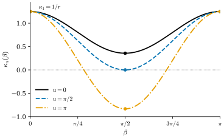
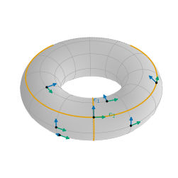

8.3 Principal Curvatures and Principal Directions
Goals
- linear map의 eigenvalue와 eigenvector를 정의하고, dimension이 2인 inner product space의 self-adjoint map이 orthonormal eigenbasis를 가짐을 증명할 수 있다.
- principal curvature와 principal direction을 정의하고, Euler's formula와 “principal curvature는 normal curvature의 최댓값과 최솟값”임을 증명할 수 있다.
- umbilical point를 정의하고, umbilical point만으로 된 connected surface가 평면이나 sphere의 일부임을 증명할 수 있다.
- line of curvature를 Rodrigues' criterion으로 알아보고, surface of revolution의 principal curvature를 generating curve로 계산할 수 있다.
Prerequisites
- Definition 8.2.1 (second fundamental form), Proposition 8.2.3, Definition 8.2.4 (normal curvature), Proposition 8.2.10
- Proposition 8.1.4, Definition 8.1.6 (self-adjoint), Proposition 8.1.7, Definition 8.1.12 (shape operator), Example 8.1.13
- Theorem 1.6.8 (determinant의 성질), Corollary 1.4.13 (trace), Theorem 1.5.10 (Gram–Schmidt)
- Proposition 3.7.16 (locally constant function), Corollary 3.7.18, Proposition 4.4.5 (signed curvature), Example 7.1.6 (surface of revolution의 \(E, F, G\))
Motivation
Section 8.2에서 surface가 방향 \(w\)로 휘는 정도를 normal curvature \(\kappa_n(w) = \mathrm{II}_p(w)\)로 쟀다. \(w\)를 \(T_pS\)의 단위원 위에서 돌리면 \(\kappa_n\)은 compact set인 원 위의 연속함수이므로 최댓값과 최솟값을 가진다(Theorem 3.6.10). saddle surface의 원점에서는 \(\kappa_n = 2\cos 2\beta\)였으므로 최댓값은 \(\beta = 0\), 최솟값은 \(\beta = \pi/2\)에서 나온다(Example 8.2.11). 두 방향은 서로 수직이다. 그리고 Exercise 8.1.4에서 본 대로, 바로 이 두 방향에서만 \(d\mathbf{N}_0(w)\)가 \(w\)와 평행했다.
이것은 saddle surface만의 우연인가? Figure 8.3.1은 torus of revolution의 세 점에서 \(\kappa_n\)을 방향의 함수로 그린 것이다. 세 점 모두에서 최댓값과 최솟값이 \(90^\circ\) 떨어진 방향에서 나온다. 이 절은 이것이 self-adjoint map의 일반적인 성질임을 보이고, 그 두 방향과 두 값에 이름을 붙인다.

Eigenvalues and the Spectral Theorem in Dimension 2
필요한 linear algebra를 먼저 갖춘다. Chapter 1은 eigenvalue를 다루지 않았으므로 여기서 정의한다. \(V\)는 finite-dimensional real vector space이다.
Definition 8.3.1 (eigenvalue and eigenvector). \(A \in \End(V)\)라 하자. \(\lambda \in \R\)와 \(0\)이 아닌 \(v \in V\)가 \(Av = \lambda v\)를 만족하면 \(\lambda\)를 \(A\)의 eigenvalue(고윳값), \(v\)를 \(\lambda\)에 대한 eigenvector(고유벡터)라 한다. subspace \(\ker(A - \lambda\,\id_V)\)를 \(\lambda\)의 eigenspace라 한다.
\(\lambda\)가 eigenvalue일 필요충분조건은 \(A - \lambda\,\id\)가 injective가 아닌 것, 곧 invertible이 아닌 것이고(Corollary 1.2.10), 이는 \(\det(A - \lambda\,\id) = 0\)과 같다(Theorem 1.6.8(b), Proposition 1.6.10). \(\dim V = 2\)이고 어떤 basis에서 \(A\)의 행렬이 \(\begin{pmatrix} a & b \\ c & d \end{pmatrix}\)이면 \(\det(A - \lambda\,\id) = (a - \lambda)(d - \lambda) - bc\)이므로
이다. eigenvalue는 이 이차방정식의 실근이다. 좌변은 basis에 무관하다(Corollary 1.4.13, Proposition 1.6.10). 대각행렬 \(\diag(a, d)\)의 eigenvalue는 \(a, d\)이고 eigenvector는 \(e_1, e_2\)다.
Non-example 8.3.2 (a map with no eigenvalue and a map with no eigenbasis). (a) \(90^\circ\) 회전 \(J\)((4.4.1))는 \(\tr J = 0\), \(\det J = 1\)이므로 (8.3.1)은 \(\lambda^2 + 1 = 0\)이고 실근이 없다. 어떤 방향도 제자리로 보내지 않으니 당연하다. (b) shear \(\begin{pmatrix} 1 & 1 \\ 0 & 1 \end{pmatrix}\)은 \((\lambda - 1)^2 = 0\)이라 eigenvalue \(1\)이 있지만, eigenspace는 \(\ker\begin{pmatrix} 0 & 1 \\ 0 & 0 \end{pmatrix} = \Span\{e_1\}\)뿐이다. eigenvector로 이루어진 basis가 없다. 두 변환 모두 self-adjoint가 아니었다(Non-example 8.1.9). self-adjoint이면 이런 일이 생기지 않는다는 것이 다음 정리다.
Theorem 8.3.3 (spectral theorem for self-adjoint linear maps in dimension 2). \(V\)가 dimension이 2인 inner product space이고 \(A \in \End(V)\)가 self-adjoint라 하자.
- (a) (8.3.1)은 실근 \(\lambda_1 \ge \lambda_2\)를 가지고(중근이면 \(\lambda_1 = \lambda_2\)), \(V\)의 orthonormal basis \((e_1, e_2)\)가 있어서 \(Ae_1 = \lambda_1e_1\), \(Ae_2 = \lambda_2e_2\)이다.
- (b) \(\lambda_1 = \lambda_2\)이면 \(A = \lambda_1\id_V\)이다. \(\lambda_1 \gt \lambda_2\)이면 두 eigenspace는 서로 수직인 직선 \(\Span\{e_1\}\), \(\Span\{e_2\}\)이다.
- (c) 단위벡터 \(v = \cos\beta\,e_1 + \sin\beta\,e_2\)에 대하여 \(\inner{Av}{v} = \lambda_1\cos^2\beta + \lambda_2\sin^2\beta\)이다. 따라서 \(\lambda_1\)과 \(\lambda_2\)는 단위원 위에서 \(\inner{Av}{v}\)의 최댓값과 최솟값이다.
이 정리가 말하는 것. self-adjoint map은 서로 수직인 두 방향을 골라 각 방향을 늘이거나 줄이기만 한다. 회전이나 shear 같은 “비틀기”가 없다.
Proof idea: orthonormal basis에서 행렬이 symmetric이므로 characteristic equation의 판별식이 \((a - c)^2 + 4b^2 \ge 0\)이다. eigenvector 하나를 잡으면 그에 수직인 방향은 self-adjointness 때문에 제자리로 간다.
Proof. (a), (b) orthonormal basis \((b_1, b_2)\)를 하나 잡는다(Theorem 1.5.10). Proposition 8.1.7(c)에 의해 \(A\)의 행렬은 symmetric \(\begin{pmatrix} a & b \\ b & c \end{pmatrix}\)이다. (8.3.1)은 \(\lambda^2 - (a + c)\lambda + (ac - b^2) = 0\)이고 판별식은
\[ (a + c)^2 - 4(ac - b^2) = (a - c)^2 + 4b^2 \ge 0 \]
이므로 실근 \(\lambda_1 \ge \lambda_2\)가 있다. 판별식이 \(0\)이면 \(a = c\), \(b = 0\)이므로 \(A = a\,\id_V\)이고, 아무 orthonormal basis나 (a)를 만족한다. 판별식이 양수이면 \(\lambda_1 \gt \lambda_2\)이다. \(\det(A - \lambda_1\id) = 0\)이므로 \(\lambda_1\)의 eigenvector가 있고, 크기로 나누어 단위벡터 \(e_1\)로 둔다. \(e_1\)에 수직인 단위벡터 \(e_2\)를 잡으면 \((e_1, e_2)\)는 orthonormal basis다. self-adjointness에서 \(\inner{Ae_2}{e_1} = \inner{e_2}{Ae_1} = \lambda_1\inner{e_2}{e_1} = 0\)이므로 \(Ae_2 \in \{e_1\}^\perp = \Span\{e_2\}\), 곧 \(Ae_2 = \mu e_2\)이다. \((e_1, e_2)\)에서 \(A\)의 행렬은 \(\diag(\lambda_1, \mu)\)이고 trace는 basis에 무관하므로 \(\lambda_1 + \mu = a + c = \lambda_1 + \lambda_2\), 곧 \(\mu = \lambda_2\)이다. 마지막으로 \(v = xe_1 + ye_2\)가 \(Av = \lambda_1 v\)를 만족하면 \(\lambda_2 y = \lambda_1 y\)이므로 \(y = 0\)이다. 따라서 \(\lambda_1\)의 eigenspace는 \(\Span\{e_1\}\)이고, 같은 방식으로 \(\lambda_2\)의 eigenspace는 \(\Span\{e_2\}\)다.
(c) orthonormality에서 \(\inner{Av}{v} = \inner{\lambda_1\cos\beta\,e_1 + \lambda_2\sin\beta\,e_2}{\cos\beta\,e_1 + \sin\beta\,e_2} = \lambda_1\cos^2\beta + \lambda_2\sin^2\beta\)이다. 모든 단위벡터는 성분이 \((x, y)\), \(x^2 + y^2 = 1\)이므로 이 꼴로 쓸 수 있다. \(\lambda_1 - \inner{Av}{v} = (\lambda_1 - \lambda_2)\sin^2\beta \ge 0\)이고 \(\inner{Av}{v} - \lambda_2 = (\lambda_1 - \lambda_2)\cos^2\beta \ge 0\)이며, 등호는 각각 \(v = \pm e_1\), \(v = \pm e_2\)에서 성립한다.
Principal Curvatures and Principal Directions
shape operator \(W_p\)는 first fundamental form에 대해 self-adjoint이므로(Theorem 8.1.10) Theorem 8.3.3을 쓸 수 있다. 이 절에서도 \(\mathbf{N}\)은 open set \(O \subseteq S\) 위의 unit normal field이다.
Definition 8.3.4 (principal curvatures and principal directions). \(p \in O\)에서 \(W_p\)의 두 eigenvalue \(\kappa_1 \ge \kappa_2\)(Theorem 8.3.3(a))를 \(\mathbf{N}\)에 대한 \(p\)에서 \(S\)의 principal curvature(주곡률)이라 하고, 그 eigenvector가 정하는 \(T_pS\)의 방향을 principal direction(주방향)이라 한다. \(W_pe_i = \kappa_ie_i\)인 \(T_pS\)의 orthonormal basis \((e_1, e_2)\)를 principal direction의 orthonormal basis라 부른다.
\(\mathbf{N}\)을 \(-\mathbf{N}\)으로 바꾸면 \(W_p\)가 \(-W_p\)가 되므로 eigenvalue는 \(-\kappa_1 \le -\kappa_2\)가 되고, 새 principal curvature는 \((-\kappa_2, -\kappa_1)\)이다. 순서까지 바뀐다. principal direction(직선으로서)은 바뀌지 않는다.
Theorem 8.3.5 (Euler's formula; principal curvatures are the extreme values of normal curvature). \(p \in O\)이고 \((e_1, e_2)\)가 principal direction의 orthonormal basis이면, 단위벡터 \(w = \cos\beta\,e_1 + \sin\beta\,e_2\)에 대하여
이다(Euler's formula). 따라서 \(\kappa_1\)과 \(\kappa_2\)는 \(p\)에서 normal curvature의 최댓값과 최솟값이다. \(\kappa_1 \gt \kappa_2\)이면 최댓값은 \(w = \pm e_1\)에서만, 최솟값은 \(w = \pm e_2\)에서만 나온다.
이 정리가 말하는 것. 한 점에서 surface가 모든 방향으로 휘는 정도는 두 수 \(\kappa_1, \kappa_2\)와 서로 수직인 두 방향으로 완전히 정해진다. 가장 많이 휘는 방향과 가장 적게 휘는 방향은 늘 서로 수직이다.
Proof. \(\kappa_n(w) = \mathrm{II}_p(w) = \inner{W_p(w)}{w}\)(Definition 8.2.4(b))이므로 Theorem 8.3.3(c)를 \(A = W_p\)에 쓰면 된다. 최댓값·최솟값과 그 위치도 같은 정리의 (c)에 있다.
Example 8.3.6 (principal curvatures of the running examples). Example 8.1.13의 shape operator에서 읽는다.
- (a) 평면: \(\kappa_1 = \kappa_2 = 0\)이고 모든 방향이 principal direction이다.
- (b) sphere(바깥쪽): \(W_p = -\tfrac1r\id\)이므로 \(\kappa_1 = \kappa_2 = -1/r\)이고 모든 방향이 principal direction이다.
- (c) cylinder(바깥쪽): \(W_p(\mathbf{x}_v) = 0\), \(W_p(\mathbf{x}_u) = -\mathbf{x}_u/r\)이고 \(\mathbf{x}_u \perp \mathbf{x}_v\)이므로 \(\kappa_1 = 0\)(축 방향 \(e_1 = \mathbf{x}_v\)), \(\kappa_2 = -1/r\)(둘레 방향 \(e_2 = \mathbf{x}_u/r\))이다. 안쪽 \(\mathbf{N}\)을 쓰면 \(\kappa_1 = 1/r\)(둘레), \(\kappa_2 = 0\)(축)이다.
- (d) saddle surface의 원점(위쪽): \(\kappa_1 = 2\)(\(e_1 = (1, 0, 0)\)), \(\kappa_2 = -2\)(\(e_2 = (0, 1, 0)\)). Euler's formula는 \(2\cos^2\beta - 2\sin^2\beta = 2\cos 2\beta\)로 Example 8.2.11과 같다.
- (e) torus of revolution(\(\mathbf{N}_{\mathbf{x}}\), 안쪽): (8.1.6)에서 \(\mathbf{x}_u\)와 \(\mathbf{x}_v\)가 eigenvector이고 \(F = 0\)이므로 \(e_1 = \mathbf{x}_u/r\)(meridian 방향), \(e_2 = \mathbf{x}_v/(R + r\cos u)\)(circle of latitude 방향)가 principal direction의 orthonormal basis다. \(R + r\cos u \gt 0\)이고 \(R \gt 0\)이므로 \(\dfrac1r - \dfrac{\cos u}{R + r\cos u} = \dfrac{R}{r(R + r\cos u)} \gt 0\)이다. 따라서
- 이다. \(\kappa_2\)는 바깥쪽 적도(\(u = 0\))에서 \(1/(R + r)\), 맨 위와 맨 아래 원(\(u = \pm\pi/2\))에서 \(0\), 안쪽 적도(\(u = \pi\))에서 \(-1/(R - r)\)이다(Figure 8.3.1, Figure 8.3.2).
Verification: verify/v-8-3-principal-curvatures.py
Umbilical Points
Definition 8.3.7 (umbilical point). \(p \in S\)에서 \(\kappa_1 = \kappa_2\)이면 \(p\)를 \(S\)의 umbilical point(배꼽점)이라 한다. 이 조건은 \(\mathbf{N}\)의 선택에 무관하다.
Theorem 8.3.3(b)에 의해 \(p\)가 umbilical point일 필요충분조건은 \(W_p = \kappa\,\id\)인 \(\kappa \in \R\)가 있는 것이고, Euler's formula에 의해 이는 모든 방향의 normal curvature가 같은 것, 또 모든 방향이 principal direction인 것과 같다.
Example 8.3.8 (examples and non-examples of umbilical points). (a) 평면과 sphere는 모든 점이 umbilical point이다(Example 8.3.6(a), (b)). (b) paraboloid of revolution \(z = u^2 + v^2\)의 원점은 umbilical point이다. 원점에서 tangent plane은 \(xy\) 평면이고 위쪽 \(\mathbf{N}(0) = e_3\)이므로 surface가 이미 tangent plane 위의 그래프 \(f(\xi, \eta) = \xi^2 + \eta^2\)이다. Proposition 8.2.10(a)에서 \(W_0\)의 행렬은 Hessian matrix \(\diag(2, 2)\)이다. 이 surface는 sphere도 평면도 아니지만 원점 하나는 umbilical point이다. (c) cylinder와 torus of revolution에는 umbilical point가 없다. cylinder는 \(\kappa_1 - \kappa_2 = 1/r\), torus of revolution은 \(\kappa_1 - \kappa_2 = R/(r(R + r\cos u)) \gt 0\)이다(Example 8.3.6). saddle surface의 원점도 umbilical point가 아니다.
Verification: verify/v-8-3-principal-curvatures.py
umbilical point가 한두 개 있는 surface는 흔하다. 그런데 모든 점이 umbilical point이면 surface의 모양이 완전히 정해진다.
Theorem 8.3.9 (surfaces consisting only of umbilical points). \(S\)가 connected regular surface이고 모든 점이 umbilical point이면, \(S\)는 어떤 평면이나 어떤 sphere에 포함된다.
이 정리가 말하는 것. 어느 점에서나 어느 방향으로나 똑같이 휘는 surface는 평면과 sphere뿐이다. 국소적인 조건(각 점에서 \(W_p\)가 스칼라배)이 surface 전체의 모양을 정한다. connected라는 가정은 빠질 수 없다. 서로 떨어진 두 sphere의 합집합도 모든 점이 umbilical point이다.
Proof idea: 국소적으로 \(\mathbf{N}_u = -\kappa\,\mathbf{x}_u\), \(\mathbf{N}_v = -\kappa\,\mathbf{x}_v\)이다. 두 식을 교차로 미분해 빼면 \(\kappa\)가 locally constant이다. \(\kappa = 0\)이면 \(\mathbf{N}\)이 상수라 평면, \(\kappa \neq 0\)이면 \(\mathbf{x} + \mathbf{N}/\kappa\)가 상수라 sphere이다. 국소적인 결론을 connectedness로 이어 붙인다.
Proof. 1단계(국소 계산). \(\mathbf{x}\colon U \to S\)가 parametrization이고 \(U\)가 connected(예를 들어 open ball)라 하자. \(\mathbf{x}(U)\) 위에서 \(\mathbf{N} = \mathbf{N}_{\mathbf{x}}\)를 쓰고, 각 점의 \(W = \kappa\,\id\)에서 함수 \(\kappa\colon \mathbf{x}(U) \to \R\)를 얻는다. (8.1.2)에서
\[ \mathbf{N}_u = -\kappa\,\mathbf{x}_u, \qquad \mathbf{N}_v = -\kappa\,\mathbf{x}_v \]
이다(\(\kappa\)는 \(\kappa \circ \mathbf{x}\)의 뜻). 첫 식과 \(\mathbf{x}_u\)의 inner product에서 \(\kappa = -\inner{\mathbf{N}_u}{\mathbf{x}_u}/E\)이므로 \(\kappa\)는 \(U\)에서 매끄럽다. 첫 식을 \(v\)로, 둘째 식을 \(u\)로 미분하면 \(\mathbf{N}_{uv} = -\kappa_v\mathbf{x}_u - \kappa\,\mathbf{x}_{uv}\), \(\mathbf{N}_{vu} = -\kappa_u\mathbf{x}_v - \kappa\,\mathbf{x}_{vu}\)이고, partial derivative의 교환(Theorem 2.2.14)으로 빼면
\[ \kappa_v\,\mathbf{x}_u - \kappa_u\,\mathbf{x}_v = 0 \]
이다. \(\mathbf{x}_u, \mathbf{x}_v\)는 linearly independent이므로 \(\kappa_u = \kappa_v = 0\)이고, \(U\)가 connected이므로 \(\kappa\)는 \(U\)에서 상수다(Corollary 3.7.18).
2단계(\(\abs{\kappa}\)는 상수). normal vector를 \(-\mathbf{N}\)으로 바꾸면 \(\kappa\)는 \(-\kappa\)가 되므로, \(\abs{\kappa}\)는 parametrization에 무관하게 \(S\) 위의 함수로 잘 정의된다. 모든 점은 1단계와 같은 \(\mathbf{x}(U)\)(open set)에 들어 있고 그 위에서 \(\abs{\kappa}\)가 상수이므로 \(\abs{\kappa}\)는 locally constant이고, \(S\)가 connected이므로 상수 \(k_0 \ge 0\)이다(Proposition 3.7.16).
3단계(\(k_0 = 0\)이면 평면). 각 \(\mathbf{x}(U)\) 위에서 \(\mathbf{N}_u = \mathbf{N}_v = 0\)이므로 \(\mathbf{N}_{\mathbf{x}}\)는 상수 \(n_0\)이고, \(\inner{\mathbf{x}}{n_0}\)도 partial derivative \(\inner{\mathbf{x}_u}{n_0} = \inner{\mathbf{x}_v}{n_0} = 0\)이라 상수다. 그러므로 점 \(q\)에 “\(q\)를 지나고 \(T_qS\)에 평행한 평면” \(P(q) = q + T_qS = \{y : \inner{y}{n_0} = \inner{q}{n_0}\}\)을 대응시키는 map은 \(\mathbf{x}(U)\) 위에서 상수다. 따라서 \(P\)(값은 \(\R^3\)의 평면들의 집합에 있다)는 locally constant이고, Proposition 3.7.16에 의해 상수 \(P_0\)이다. 모든 \(q \in S\)가 \(q \in P(q) = P_0\)이므로 \(S \subseteq P_0\)이다.
4단계(\(k_0 \gt 0\)이면 sphere). 각 \(\mathbf{x}(U)\) 위에서 \(\kappa\)는 \(0\)이 아닌 상수이고, \(c(q) = q + \mathbf{N}_{\mathbf{x}}(q)/\kappa(q)\)로 둔다. normal vector를 \(-\mathbf{N}\)으로 바꾸면 \(\kappa\)도 \(-\kappa\)가 되어 \(\mathbf{N}/\kappa\)는 그대로이므로, \(c\colon S \to \R^3\)은 잘 정의된다. \(\mathbf{x}(U)\) 위에서 \((c \circ \mathbf{x})_u = \mathbf{x}_u + \mathbf{N}_u/\kappa = \mathbf{x}_u - \mathbf{x}_u = 0\)이고 \((c \circ \mathbf{x})_v = 0\)도 같으므로 \(c\)는 locally constant, 따라서 상수 \(c_0\)이다. 그러면 모든 \(q\)에서 \(\abs{q - c_0} = \abs{\mathbf{N}(q)}/\abs{\kappa} = 1/k_0\)이므로 \(S\)는 중심 \(c_0\), 반지름 \(1/k_0\)인 sphere에 포함된다.
증명은 orientation을 가정하지 않았다. 평면과 sphere의 열린 부분집합은 거꾸로 모든 점이 umbilical point이므로, 정리는 “connected surface가 umbilical point로만 이루어질 필요충분조건은 평면이나 sphere의 열린 부분집합인 것”이라고 말해도 된다. 특히 Section 8.1에서 미뤄 둔 사실, “connected surface의 모든 점에서 \(W_p = 0\)이면 평면의 일부”는 3단계다.
Lines of Curvature and Surfaces of Revolution
principal direction은 점마다 정해지는 방향이다. 그 방향을 따라 가는 곡선을 생각할 수 있다.
Definition 8.3.10 (line of curvature). \(\gamma\colon I \to S\)가 regular curve이고 모든 \(t \in I\)에서 \(\gamma'(t)\)가 \(\gamma(t)\)의 principal direction이면 \(\gamma\)를 line of curvature(곡률선)이라 한다.
Proposition 8.3.11 (Rodrigues' criterion). regular curve \(\gamma\colon I \to O\)가 line of curvature일 필요충분조건은 함수 \(\lambda\colon I \to \R\)가 있어서
인 것이다. 이때 \(\lambda(t)\)는 \(\gamma'(t)\) 방향의 principal curvature이다.
Proof. 정의 (6.4.1)에서 \((\mathbf{N} \circ \gamma)'(t) = d\mathbf{N}_{\gamma(t)}(\gamma'(t)) = -W_{\gamma(t)}(\gamma'(t))\)이다. \(\gamma'(t) \neq 0\)이 principal direction일 필요충분조건은 \(W\)의 eigenvector인 것, 곧 \(W(\gamma'(t)) = \lambda(t)\gamma'(t)\)인 것이다.
평면과 sphere에서는 모든 곡선이 line of curvature이다. cylinder에서는 수평 원과 모선이 line of curvature이고, helix(\(b \neq 0\))는 line of curvature가 아니다. helix의 속도 \(\mathbf{x}_u + b\,\mathbf{x}_v\)는 \(W(\mathbf{x}_u + b\,\mathbf{x}_v) = -\mathbf{x}_u/r\)와 평행하지 않기 때문이다. torus of revolution의 meridian과 circle of latitude는 line of curvature이다(Example 8.3.6(e)). 이것은 surface of revolution 전체의 성질이다.
Proposition 8.3.12 (lines of curvature and principal curvatures of a surface of revolution). surface of revolution \(\mathbf{x}(u, v) = (\rho(u)\cos v,\ \rho(u)\sin v,\ z(u))\)(\(\rho \gt 0\), generating curve \(\alpha = (\rho, z)\))에 \(\mathbf{N} = \mathbf{N}_{\mathbf{x}}\)를 주자. meridian(\(v\) 고정)과 circle of latitude(\(u\) 고정)은 line of curvature이고, 대응하는 principal curvature는
이다. meridian 방향의 principal curvature는 \((\rho, z)\) 평면에서 generating curve의 signed curvature \(\kappa_s(\alpha)\)(Proposition 4.4.5)와 같다.
Proof. Example 7.5.2(d)에서 \(\mathbf{N} \circ \mathbf{x} = (-z'\cos v,\ -z'\sin v,\ \rho')/\abs{\alpha'}\)이고 \(\abs{\alpha'}\)은 \(u\)만의 함수다. \(v\)로 미분하면 \(\mathbf{N}_v = (z'\sin v,\ -z'\cos v,\ 0)/\abs{\alpha'}\)이고 \(\mathbf{x}_v = \rho\,(-\sin v, \cos v, 0)\)이므로 \(\mathbf{N}_v = -\dfrac{z'}{\rho\abs{\alpha'}}\mathbf{x}_v\)이다. (8.1.2)에서 둘째 식이 나온다. \(F = 0\)이므로((7.1.4)) \(\mathbf{x}_u \perp \mathbf{x}_v\)이고, self-adjointness에서 \(\inner{W(\mathbf{x}_u)}{\mathbf{x}_v} = \inner{\mathbf{x}_u}{W(\mathbf{x}_v)} = 0\)이다. 따라서 \(W(\mathbf{x}_u) \in \{\mathbf{x}_v\}^\perp \cap T_pS = \Span\{\mathbf{x}_u\}\)이고, 그 coefficient는 \(\inner{W(\mathbf{x}_u)}{\mathbf{x}_u}/E = \mathrm{II}(\mathbf{x}_u)/E\)이다. meridian \(u \mapsto \mathbf{x}(u, v)\)에 Proposition 8.2.3을 쓰면 \(\mathrm{II}(\mathbf{x}_u) = \inner{\mathbf{x}_{uu}}{\mathbf{N}}\)이고, \(\mathbf{x}_{uu} = (\rho''\cos v,\ \rho''\sin v,\ z'')\)이므로 \(\mathrm{II}(\mathbf{x}_u) = (-\rho''z' + z''\rho')/\abs{\alpha'}\)이다. \(E = \abs{\alpha'}^2\)으로 나누면 첫 식이다. 두 coordinate curve의 속도가 늘 eigenvector이므로 line of curvature이다. 마지막 주장은 (4.4.4)에 \((x, y) = (\rho, z)\)를 넣은 것이다.
어느 쪽이 \(\kappa_1\)(큰 쪽)인지는 surface에 따라 다르다. circle of latitude 방향의 값 \(z'/(\rho\abs{\alpha'})\)에도 뜻이 있다. circle of latitude는 반지름 \(\rho\)인 원이고, \(z'/\abs{\alpha'}\)은 generating curve의 unit tangent vector가 축과 이루는 각의 코사인이다. 원의 curvature \(1/\rho\)에 Meusnier's theorem의 \(\cos\vartheta\)가 곱해진 것이다.
Example 8.3.13 (running examples as surfaces of revolution, and the catenoid). (8.3.5)에 넣는다.
- (a) sphere \(\alpha(\theta) = (r\sin\theta, r\cos\theta)\): \(\abs{\alpha'} = r\)이고 \(\mathbf{N}_{\mathbf{x}} = \mathbf{x}/r\)(바깥쪽)이다. \(\rho'z'' - \rho''z' = (r\cos\theta)(-r\cos\theta) - (-r\sin\theta)(-r\sin\theta) = -r^2\)이므로 meridian의 principal curvature는 \(-r^2/r^3 = -1/r\), circle of latitude는 \(-r\sin\theta/(r\sin\theta \cdot r) = -1/r\)이다. Example 8.3.6(b)와 같다.
- (b) torus of revolution \(\alpha(u) = (R + r\cos u, r\sin u)\): \(\abs{\alpha'} = r\), \(\rho'z'' - \rho''z' = (-r\sin u)(-r\sin u) - (-r\cos u)(r\cos u) = r^2\)이므로 meridian은 \(1/r\), circle of latitude는 \(r\cos u/((R + r\cos u)r) = \cos u/(R + r\cos u)\)로 (8.3.3)과 같다(Figure 8.3.2).
- (c) catenoid \(\alpha(u) = (\cosh u, u)\)(Example 7.1.6(d)): \(\abs{\alpha'} = \cosh u\), \(\rho'z'' - \rho''z' = \sinh u \cdot 0 - \cosh u \cdot 1 = -\cosh u\)이다. meridian의 principal curvature는 \(-\cosh u/\cosh^3u = -1/\cosh^2u\), circle of latitude는 \(1/(\cosh u \cdot \cosh u) = 1/\cosh^2u\)이다. 따라서 \(\kappa_1 = 1/\cosh^2u\)(circle of latitude), \(\kappa_2 = -1/\cosh^2u\)(meridian)이고 모든 점에서 \(\kappa_1 + \kappa_2 = 0\)이다. 이 성질은 Section 8.4에서 이름을 얻는다.
Verification: verify/v-8-3-principal-curvatures.py

Summary
- dimension이 2인 inner product space의 self-adjoint map은 서로 수직인 두 eigenvector를 가지고, 두 eigenvalue는 단위원 위 quadratic form \(\inner{Av}{v}\)의 최댓값과 최솟값이다(Theorem 8.3.3).
- \(W_p\)의 eigenvalue \(\kappa_1 \ge \kappa_2\)가 principal curvature, eigenvector의 방향이 principal direction이다. Euler's formula \(\kappa_n = \kappa_1\cos^2\beta + \kappa_2\sin^2\beta\)에 의해 principal curvature는 normal curvature의 최댓값과 최솟값이다.
- running example: sphere(바깥쪽) \(-1/r, -1/r\), cylinder(바깥쪽) \(0, -1/r\), saddle surface의 원점 \(2, -2\), torus of revolution(안쪽) \(1/r\)(meridian), \(\cos u/(R + r\cos u)\)(circle of latitude).
- \(\kappa_1 = \kappa_2\)인 점이 umbilical point이다. connected surface의 모든 점이 umbilical point이면 surface는 평면이나 sphere에 포함된다(Theorem 8.3.9).
- line of curvature는 \((\mathbf{N} \circ \gamma)' = -\lambda\gamma'\)로 판정한다. surface of revolution의 meridian과 circle of latitude는 line of curvature이고, meridian의 principal curvature는 generating curve의 signed curvature이다.
다음 절에서는 두 principal curvature를 곱과 평균이라는 두 수로 묶는다. 곱 \(K = \kappa_1\kappa_2\)는 normal vector의 선택에 무관하고 surface의 점을 네 종류로 나누며, Gauss map이 넓이를 몇 배로 바꾸는지를 잰다.
Exercises
Exercise 8.3.1 ★ cylinder를 surface of revolution \(\alpha(u) = (r, u)\)로 parametrization한 \(\mathbf{y}(u, v) = (r\cos v, r\sin v, u)\)(Example 6.5.11(b))에 Proposition 8.3.12를 써서 principal curvature를 구하여라. Example 8.3.6(c)와 부호가 다른 까닭을 설명하여라.
Solution
\(\rho = r\), \(z = u\)이므로 \(\rho' = \rho'' = z'' = 0\), \(z' = 1\), \(\abs{\alpha'} = 1\)이다. (8.3.5)에서 meridian(모선) 방향은 \(0\), circle of latitude 방향은 \(1/r\)이다. 따라서 \(\mathbf{N}_{\mathbf{y}}\)에 대해 \(\kappa_1 = 1/r\)(둘레), \(\kappa_2 = 0\)(축)이다.
Example 7.5.2(d)의 식에서 \(\mathbf{N}_{\mathbf{y}} = (-\cos v, -\sin v, 0)\)으로 안쪽이다. standard parametrization \(\mathbf{x}(u, v) = (r\cos u, r\sin u, v)\)와는 변수의 순서가 바뀌어 있으므로 \(\mathbf{y}(u, v) = \mathbf{x}(v, u)\)이고, change of parameters의 determinant가 \(-1\)이라 normal vector가 뒤집힌다(Proposition 7.5.3(b)). 안쪽 \(\mathbf{N}\)에 대한 값은 Example 8.3.6(c)의 마지막 문장과 같다.
Verification: verify/v-8-3-principal-curvatures.py
Exercise 8.3.2 ★ 참인지 거짓인지 판별하고 이유를 대어라. (a) principal direction은 \(\mathbf{N}\)의 선택에 무관하다. (b) \(\mathbf{N}\)을 \(-\mathbf{N}\)으로 바꿔도 \(\kappa_1\)은 그대로다. (c) umbilical point가 아닌 점에서 principal direction은 정확히 두 개이고 서로 수직이다. (d) 모든 점이 umbilical point인 surface는 평면이나 sphere에 포함된다. (e) connected surface 위의 모든 regular curve가 line of curvature이면 surface는 평면이나 sphere에 포함된다.
Solution
(a) 참. \(-W_p\)와 \(W_p\)는 eigenvector가 같다.
(b) 거짓. 새 principal curvature는 \((-\kappa_2, -\kappa_1)\)이다. 예: cylinder는 바깥쪽이면 \(\kappa_1 = 0\), 안쪽이면 \(\kappa_1 = 1/r\).
(c) 참. Theorem 8.3.3(b).
(d) 거짓. connected여야 한다. 서로 떨어진 두 sphere의 합집합이 반례다.
(e) 참. 각 점 \(p\)와 각 방향 \(w\)에 대해 \(p\)를 속도 \(w\)로 지나는 regular curve(예: \(\mathbf{x}(q + t(a, b))\))가 있으므로 모든 방향이 principal direction이고, 모든 점이 umbilical point이다. Theorem 8.3.9를 쓴다.
Exercise 8.3.3 ★ saddle surface의 점 \(p = \mathbf{x}(\tfrac12, \tfrac12)\)에서 \(W_p\)의 basis \((\mathbf{x}_u, \mathbf{x}_v)\)에 대한 행렬은 \(\tfrac{2}{3\sqrt3}\begin{pmatrix} 2 & -1 \\ 1 & -2 \end{pmatrix}\)이다(Example 8.1.11의 부호를 바꾼 것). principal curvature와 principal direction을 구하고, 두 principal direction이 first fundamental form에 대해서는 수직이지만 성분 \((a, b)\)를 \(\R^2\)의 표준 inner product로 곱하면 수직이 아님을 확인하여라.
Solution
행렬을 \(cB\), \(c = \tfrac{2}{3\sqrt3}\), \(B = \begin{pmatrix} 2 & -1 \\ 1 & -2 \end{pmatrix}\)로 쓰면 \(\tr = 0\), \(\det = c^2(-4 + 1) = -3c^2 = -\tfrac49\)이다. (8.3.1)은 \(\lambda^2 - \tfrac49 = 0\)이므로 \(\kappa_1 = \tfrac23\), \(\kappa_2 = -\tfrac23\)이다. \(\lambda = \tfrac23 = c\sqrt3\)이면 \(B(a, b)^{\mathsf T} = \sqrt3\,(a, b)^{\mathsf T}\)에서 \(2a - b = \sqrt3\,a\), 곧 \(b = (2 - \sqrt3)a\)이다. principal direction은 \(w_1 = \mathbf{x}_u + (2 - \sqrt3)\mathbf{x}_v\)이다. 같은 방식으로 \(\lambda = -\tfrac23\)이면 \(b = (2 + \sqrt3)a\), \(w_2 = \mathbf{x}_u + (2 + \sqrt3)\mathbf{x}_v\)이다.
\(E = 2\), \(F = -1\), \(G = 2\)이므로 \(\inner{w_1}{w_2} = E + \big((2 + \sqrt3) + (2 - \sqrt3)\big)F + (2 - \sqrt3)(2 + \sqrt3)G = 2 - 4 + 2 = 0\)이다((7.1.2)). 그러나 \((1, 2 - \sqrt3)\cdot(1, 2 + \sqrt3) = 1 + 1 = 2 \neq 0\)이다. 수직성은 first fundamental form으로 재야 한다. (\(\det = -\tfrac49\)는 Section 8.4에서 이 점의 Gaussian curvature가 된다.)
Verification: verify/v-8-3-principal-curvatures.py
Exercise 8.3.4 ★ (그림 해석) Figure 8.3.1에서 \(u = \pi\)의 곡선이 \(\kappa_n = 0\)을 지나는 \(\beta \in (0, \pi/2)\)를 Euler's formula로 구하고 그림과 비교하여라. \(u = 0\)과 \(u = \pi/2\)에서는 \(\kappa_n = 0\)인 방향이 몇 개인가?
Solution
\(u = \pi\)에서 \(\kappa_1 = 1/0.8 = 1.25\), \(\kappa_2 = -1/(2 - 0.8) = -1/1.2\)이다. \(\kappa_1\cos^2\beta + \kappa_2\sin^2\beta = 0\)에서 \(\tan^2\beta = -\kappa_1/\kappa_2 = 1.25 \times 1.2 = 1.5\), 곧 \(\beta = \arctan\sqrt{1.5} \approx 0.886\) (약 \(50.8^\circ\))이다. 그림에서 주황 곡선이 \(\pi/4\)보다 조금 오른쪽에서 \(0\)을 지나는 것과 맞는다. symmetry로 \(\pi - 0.886\)에서도 \(0\)이다.
\(u = 0\)이면 \(\kappa_1, \kappa_2 \gt 0\)이라 \(\kappa_n \gt 0\)이고 그런 방향이 없다. \(u = \pi/2\)이면 \(\kappa_2 = 0\)이라 \(\kappa_n = \kappa_1\cos^2\beta = 0\)은 \(\beta = \pi/2\) 하나(직선으로서)뿐이다.
Verification: verify/v-8-3-principal-curvatures.py
Exercise 8.3.5 ★★ regular curve \(\gamma\colon I \to O\)가 평면 \(\Pi\) 안에 있고, 모든 점에서 \(\mathbf{N}(\gamma(t))\)가 \(\Pi\)에 평행하다(곧 \(\Pi\)와 surface가 \(\gamma\)를 따라 직각으로 만난다)고 하자. \(\gamma\)가 line of curvature임을 보여라. 이것으로 surface of revolution의 meridian이 line of curvature라는 사실을 다시 얻어라.
Hint
\(\Pi\)의 방향 공간을 \(\Pi_0\)(dimension이 2)라 하면 \(\gamma'\)와 \(\mathbf{N} \circ \gamma\)는 \(\Pi_0\)의 수직인 두 벡터다. \((\mathbf{N} \circ \gamma)'\)도 \(\Pi_0\) 안에 있고 \(\mathbf{N}\)에 수직이다.
Solution
\(m\)을 \(\Pi\)의 unit normal vector라 하면 \(\inner{\gamma'}{m} = 0\), \(\inner{\mathbf{N} \circ \gamma}{m} = 0\)이다. 뒤의 식을 미분하면 \(\inner{(\mathbf{N} \circ \gamma)'}{m} = 0\)이므로 \((\mathbf{N} \circ \gamma)' \in \Pi_0 = m^\perp\)이다. 또 \(\abs{\mathbf{N}} = 1\)에서 \((\mathbf{N} \circ \gamma)' \perp \mathbf{N} \circ \gamma\)이다. \(\Pi_0\)은 dimension이 2이고 서로 수직이며 \(0\)이 아닌 두 벡터 \(\gamma'(t)\), \(\mathbf{N}(\gamma(t))\)의 span이므로, \(\Pi_0\) 안에서 \(\mathbf{N}\)에 수직인 벡터는 \(\gamma'\)의 배수다. 따라서 \((\mathbf{N} \circ \gamma)'(t) = -\lambda(t)\gamma'(t)\)이고, Proposition 8.3.11에 의해 \(\gamma\)는 line of curvature이다.
surface of revolution의 meridian \(u \mapsto \mathbf{x}(u, v_0)\)은 축을 포함하는 평면 \(\Pi = \Span\{(\cos v_0, \sin v_0, 0), e_3\}\) 안에 있고, \(\mathbf{N} = (-z'\cos v_0, -z'\sin v_0, \rho')/\abs{\alpha'}\)도 \(\Pi\)에 평행하다. 그러므로 meridian은 line of curvature이다.
Exercise 8.3.6 ★★ cylinder \(C_r\) 위의 line of curvature는 수평 원의 호이거나 모선(\(z\)축에 평행한 직선)의 선분뿐임을 보여라. (line of curvature의 정의역 \(I\)는 구간이다.)
Hint
\(\mathbf{t} = \gamma'/\abs{\gamma'}\)이라 할 때 연속함수 \(\inner{\mathbf{t}}{e_3}^2\)이 어떤 값만 가질 수 있는지 본다.
Solution
cylinder의 모든 점은 umbilical point가 아니고(\(\kappa_1 - \kappa_2 = 1/r\)), principal direction은 \(e_3\)(축 방향)과 수평 방향 \(\mathbf{x}_u/r\) 둘뿐이다(Example 8.3.6(c)). line of curvature \(\gamma\)의 unit tangent vector \(\mathbf{t}(t)\)는 따라서 \(\pm e_3\)이거나 수평이고, \(g(t) = \inner{\mathbf{t}(t)}{e_3}^2\)은 \(1\) 또는 \(0\)만 값으로 가진다. \(g\)는 연속이고 \(I\)는 connected이므로 intermediate value theorem(Corollary 3.7.6)에 의해 상수다.
\(g \equiv 1\)이면 \(\gamma' = \pm\abs{\gamma'}e_3\)이므로 \(x, y\) 성분이 상수이고 \(\gamma\)는 모선 위에 있다. \(g \equiv 0\)이면 \(z\) 성분의 도함수가 \(0\)이므로 \(z\)가 상수이고, \(\gamma\)는 cylinder와 수평면의 교선인 원 위에 있다. regular curve이므로 각각 선분 또는 원호를 그린다. helix가 line of curvature가 아닌 것은 이 결과의 한 예다.